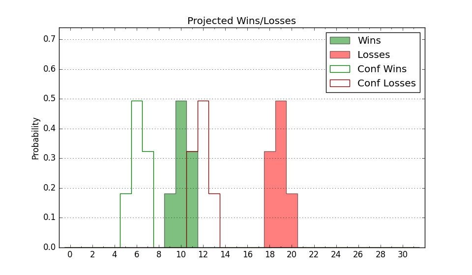

| Home | Game Probabilities | Conferences | Preseason Predictions | Odds Charts | NCAA Tournament |
| City: | Grand Forks, North Dakota | |
| Conference: | Summit (8th)
| |
| Record: | 5-11 (Conf) 9-18 (Overall) | |
| Ratings: | Comp.: -9.1 (269th) Net: -9.1 (269th) Off: 100.5 (218th) Def: 109.6 (301st) SoR: 0.0 (151st) |
| Remaining | ||||||
|---|---|---|---|---|---|---|
| Date | Opponent | Win Prob | Pred. | |||
| 2/23 | Western Illinois (258) | 62.8% | W 73-70 | |||
| 2/25 | St. Thomas MN (207) | 51.1% | W 74-73 | |||
| Previous | Game Score | |||||
| Date | Opponent | Win Prob | Result | Off | Def | Net |
| 11/7 | @Incarnate Word (346) | 59.4% | W 65-57 | -5.4 | 20.2 | 14.8 |
| 11/10 | @Creighton (12) | 2.0% | L 61-96 | 1.6 | -8.5 | -6.9 |
| 11/15 | Pacific (185) | 45.5% | L 63-93 | -20.3 | -22.7 | -43.1 |
| 11/17 | @Elon (316) | 46.8% | W 77-73 | 7.3 | -4.3 | 2.9 |
| 11/20 | Montana St. (103) | 27.9% | L 71-81 | 9.6 | -16.7 | -7.1 |
| 11/25 | Dixie St. (158) | 40.4% | W 67-52 | -3.5 | 34.1 | 30.6 |
| 11/27 | Cal St. Fullerton (117) | 30.4% | W 73-57 | 23.1 | 12.6 | 35.7 |
| 11/30 | @Iowa St. (16) | 2.7% | L 44-63 | -7.7 | 14.9 | 7.2 |
| 12/3 | @Portland (132) | 13.5% | L 69-90 | -4.8 | -9.1 | -13.9 |
| 12/6 | @Idaho (287) | 37.9% | L 66-76 | -9.3 | 0.1 | -9.2 |
| 12/10 | Seattle (146) | 38.5% | L 78-80 | 4.0 | -0.9 | 3.0 |
| 12/19 | @St. Thomas MN (207) | 23.4% | L 62-75 | 4.4 | -10.5 | -6.1 |
| 12/30 | North Dakota St. (201) | 49.4% | L 49-71 | -28.4 | -3.5 | -32.0 |
| 1/5 | South Dakota (319) | 75.8% | L 60-62 | -18.6 | 7.6 | -11.0 |
| 1/7 | South Dakota St. (170) | 41.7% | L 59-60 | -21.4 | 19.9 | -1.5 |
| 1/12 | @Nebraska Omaha (304) | 43.4% | L 63-69 | -15.4 | 4.2 | -11.2 |
| 1/14 | @Denver (285) | 37.5% | L 71-78 | -0.8 | -8.4 | -9.2 |
| 1/19 | UMKC (280) | 66.5% | W 77-60 | 7.0 | 10.9 | 17.9 |
| 1/21 | Oral Roberts (55) | 15.1% | L 72-84 | 6.5 | -12.3 | -5.8 |
| 1/23 | @Western Illinois (258) | 33.1% | L 80-92 | 3.6 | -16.5 | -12.9 |
| 1/27 | @North Dakota St. (201) | 22.3% | L 75-91 | 6.0 | -22.2 | -16.3 |
| 2/2 | @South Dakota St. (170) | 17.4% | L 73-96 | 7.6 | -22.5 | -15.0 |
| 2/4 | @South Dakota (319) | 47.9% | W 86-72 | 16.1 | 7.7 | 23.8 |
| 2/9 | Denver (285) | 67.2% | W 86-63 | 19.2 | 9.3 | 28.5 |
| 2/11 | Nebraska Omaha (304) | 72.3% | W 76-73 | -8.6 | 1.8 | -6.8 |
| 2/16 | @Oral Roberts (55) | 4.9% | L 70-73 | 10.5 | 13.6 | 24.2 |
| 2/18 | @UMKC (280) | 36.8% | W 81-73 | 15.5 | 1.7 | 17.2 |
| Stats & Trends | |||||
|---|---|---|---|---|---|
| Current | Day | Week | Month | Season | |
| Composite | -9.1 | -0.0 | +1.7 | +2.5 | +7.8 |
| Comp Rank | 269 | -3 | +24 | +31 | +77 |
| Net Efficiency | -9.1 | -0.0 | +1.7 | +2.2 | -- |
| Net Rank | 269 | -3 | +24 | +27 | -- |
| Off Efficiency | 100.5 | +0.0 | +1.0 | +4.0 | -- |
| Off Rank | 218 | -1 | +13 | +58 | -- |
| Def Efficiency | 109.6 | -0.0 | +0.7 | -1.8 | -- |
| Def Rank | 301 | -- | +12 | -15 | -- |
| SoS Rank | 228 | +1 | +30 | +41 | -- |
| Exp. Wins | 10.1 | +0.0 | +0.8 | +1.6 | +1.1 |
| Exp. Conf Wins | 6.1 | +0.0 | +0.8 | +1.6 | +0.0 |
| Conf Champ Prob | 0.0 | -- | -- | -- | -0.7 |

| Advanced Stats | ||
|---|---|---|
| Stat | Value | Rank |
| Off Eff FG % | 0.496 | 212 |
| Off Ast Ratio | 0.129 | 278 |
| Off ORB% | 0.242 | 257 |
| Off TO Rate | 0.157 | 189 |
| Off FT Ratio | 0.294 | 248 |
| Def Eff FG % | 0.536 | 293 |
| Def Ast Ratio | 0.131 | 86 |
| Def ORB% | 0.272 | 203 |
| Def TO Rate | 0.135 | 314 |
| Def FT Ratio | 0.283 | 103 |